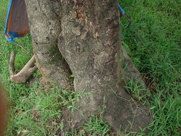

lebut 
/lɔbut/
n.
“base”
1.
n.
base of a tree
Ka lebut iyan ka igtubu te minsan nekey ne egtubu wey egtulin. Egkaayun degma ne iyan igpasabut kayi ka igtubu/pupul te behas te me prutas wey ke ka balitang naa te ayam wey ke etew.
Eggimeley ki pad sika te lebut te kayu.
We will rest at the base of that tree for a while.
Wrd.Gloss: base/trunk
Eng. base; trunk
OCM: Flora (137)
DDP: Parts of a plant (1.5.5)
Online dict status: -
Usage level: F
2.
n.
the stem end of a fruit
Eng. fruit top
OCM: Flora (137)
DDP: Parts of a plant (1.5.5)
Online dict status: -
Usage level: F
3.
n.
the buttocks of a person or animal
Wrd.Gloss: buttocks
Amana ne bubuyahen ka piyus ni Aye iling te lebut te patuk.
Aunt's buttocks are very big as of duck.
cf. piyus
Eng. buttocks; backside
OCM: Ethnoanatomy (826)
DDP: Torso (2.1.2)
Online dict status: -
Usage level: M
4.
n.
a polite term for the genitals of someone of the opposite sex
Wrd.Gloss: genitals
Eng. genitals; private parts
Online dict status: -
Usage level: M
n.
Data Qual: dulug?
Data Qual: QDL doesn't know this word
rudder/stern
Eng. rudder
Tag. úgit
OCM: Boats (501)
Online dict status: -
Usage level: M
5.
n.
(lebut_te_panamug) an obligation of male sides to be given at female sides especially at grandmother and granfather either it is money, things, or animal.
O. Syn. tipak_te_buel
O. Syn. kapulanan
O. Syn. punas_te_tei
Eng. dowry
Online dict status: -
Usage level: R
Updated by: RJH,JLM,AAA,TME,QDL,NJK,QDL
Last updated: 10/Feb/2016
"lebut" in text "Cooking in Bamboo"
"lebut" in text "Cooking in Bamboo"
"lebut" in text "Cooking in Bamboo"
This page last updated: 03-Jan-2020
Copyright © 2009-2014, Matigsalug Language Christian Association, Inc